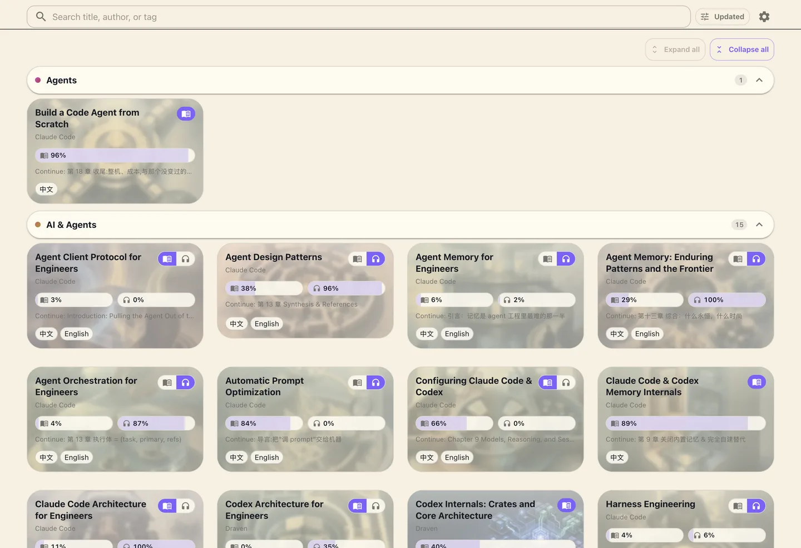
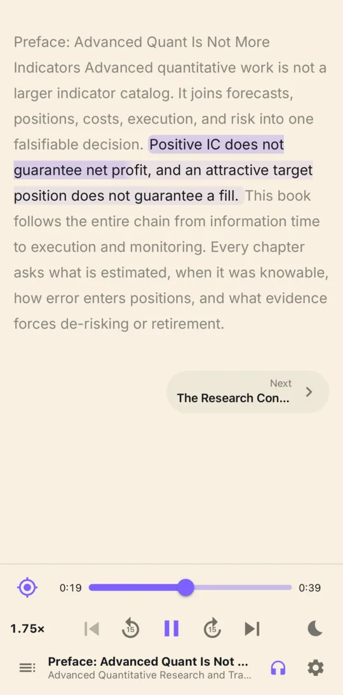
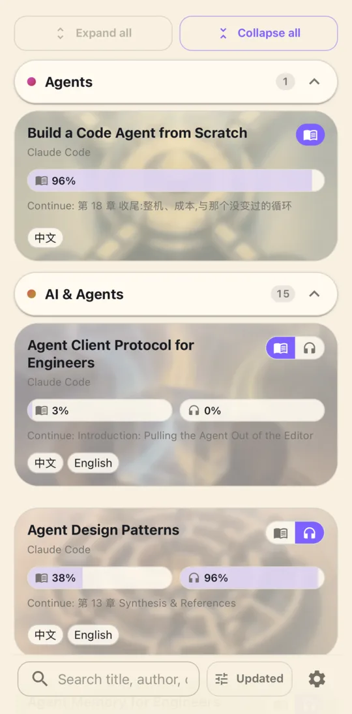
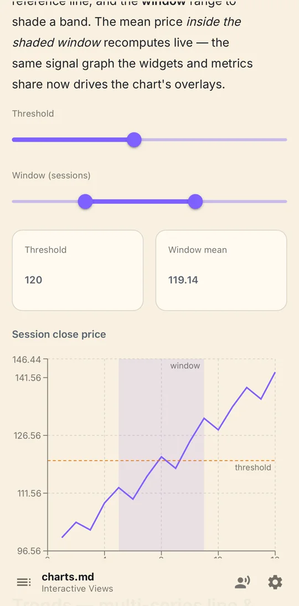

READ
Editorial calm for dense ideas.
Responsive typography, real chapters, progress, search, and a bookshelf that treats books as books—not folders.
READ / LISTEN / EXPLORE
LiveView turns Markdown, technical assets, translations, and audio into one self-hosted library—made to read deeply, listen naturally, and keep offline.
Open source · Self-hosted · Web and native


01 / ONE PUBLICATION
A technical book should not become a different product when you switch device, language, or mode. LiveView keeps the publication whole.
READ
Responsive typography, real chapters, progress, search, and a bookshelf that treats books as books—not folders.
LISTEN
Text and audiobook renditions share identity. Sentence-level timing keeps narration and reading position in step.
EXPLORE
Charts, Mermaid, math, Typst, data, PDFs, and interactive views keep their meaning instead of flattening into screenshots.
02 / EVERY SCREEN
Desktop exposes the library's structure. Mobile is touch-first without simplifying the content. Both share the same publication contract.


03 / ONE CONTENT CONTRACT
Preview, validation, publication, web reading, and native sync use the same rules. The content you checked is the content your reader receives.
Explore the content modelbook.tomlcontent DAGverified offlineOnly changed content moves through the publication graph.
Text, artwork, documents, and audio are content-addressed resources.
Source, database, object storage, and delivery remain self-hosted.
04 / FORMAT-NATIVE
LiveView gives technical resources a first-class place in the book—and a deliberate narration path when the reader switches to audio.
YOUR LIBRARY, ALIVE
Start with a folder. Add durable publishing and native offline access when the library is ready.